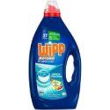
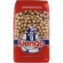
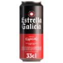

Productos de supermercado
Tabla Comparativa de productos
Tabla con diferentes productos de supermercado, incluyendo precio, imágenes de los productos y enlaces al supermercado on-line.
| Producto |
Categoría |
Precio |
Imagen |
Enlace |
| Detergente |
Limpieza |
11,89 |
 |
Detergente en Eroski
|
| Garbanzos |
Alimentación |
3,80 |
 |
Garbanzos en Eroski |
| Cerveza |
Bebidas |
0,79 |
 |
Cerveza en Eroski |
La programación trata los eventos click, dobleclik, contextmenu (botón derecho), mousedown y mouseup en la tabla